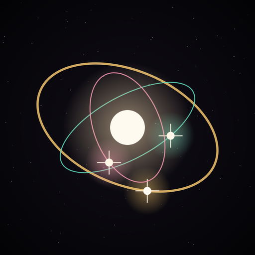

Bộ não tri thức
Bấm nút Chia sẻ của Safari → Thêm vào Màn hình chính để có biểu tượng riêng trên iPhone.
Mở Bộ não tri thức
Bấm nút Chia sẻ của Safari → Thêm vào Màn hình chính để có biểu tượng riêng trên iPhone.
Mở Bộ não tri thức